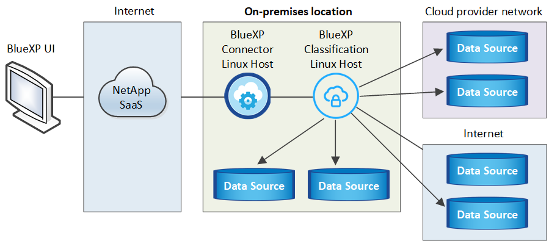
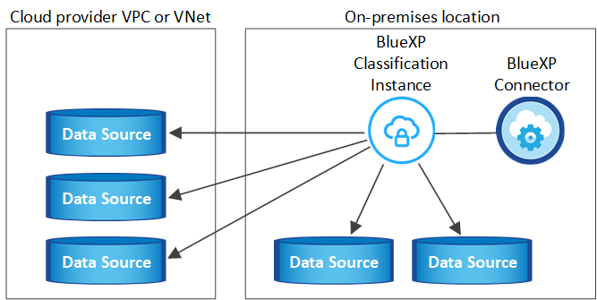
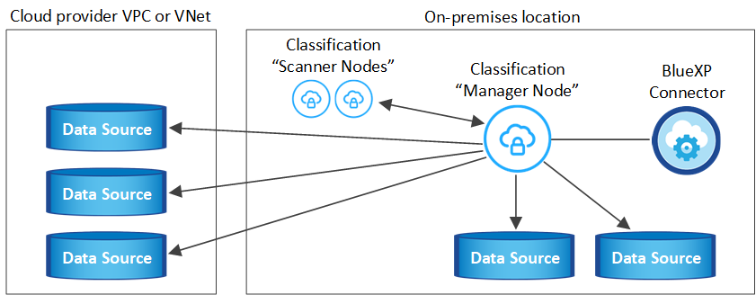
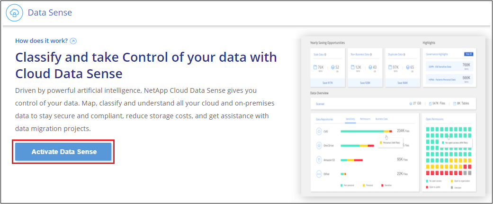
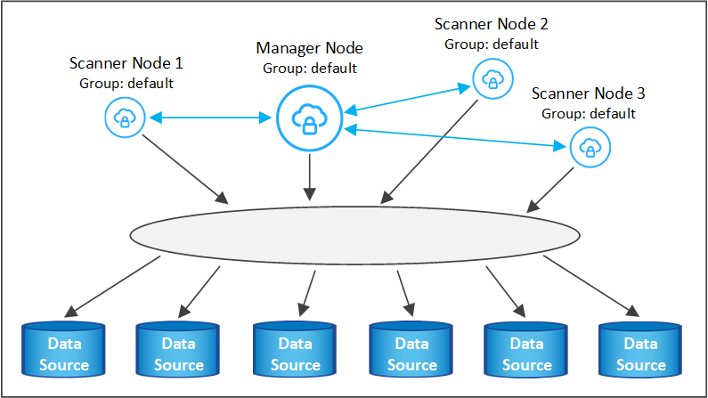
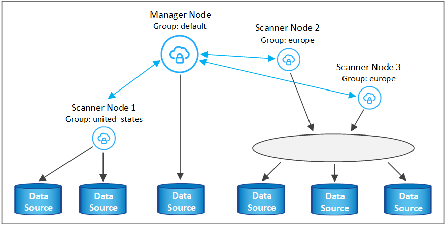

Release notes
Release notes
Install BlueXP classification on a host that has internet access
 Suggest changes
Suggest changes
Complete a few steps to install BlueXP classification on a Linux host in your network, or on a Linux host in the cloud, that has internet access. You'll need to deploy the Linux host manually in your network or in the cloud as part of this installation.
The on-prem installation may be a good option if you prefer to scan on-premises ONTAP systems using a BlueXP classification instance that's also located on premises — but this is not a requirement. The software functions exactly the same way regardless of which installation method you choose.
The BlueXP classification installation script starts by checking if the system and environment meet the required prerequisites. If the prerequisites are all met, then the installation starts. If you would like to verify the prerequisites independently of running the BlueXP classification installation, there is a separate software package you can download that only tests for the prerequisites. See how to check if your Linux host is ready to install BlueXP classification.
The typical installation on a Linux host in your premises has the following components and connections.

The typical installation on a Linux host in the cloud has the following components and connections.

For very large configurations where you'll be scanning petabytes of data, you can include multiple hosts to provide additional processing power. When using multiple host systems, the primary system is called the Manager node, and the additional systems that provide extra processing power are called Scanner nodes.
Note that you can also install BlueXP classification in an on-premises site that doesn't have internet access for completely secure sites.
Quick start
Get started quickly by following these steps, or scroll down to the remaining sections for full details.
 Create a Connector
Create a ConnectorIf you don't already have a Connector, deploy the Connector on-premises on a Linux host in your network, or on a Linux host in the cloud.
You can also create a Connector with your cloud provider. See creating a Connector in AWS, creating a Connector in Azure, or creating a Connector in GCP.
 Review prerequisites
Review prerequisitesEnsure that your environment can meet the prerequisites. This includes outbound internet access for the instance, connectivity between the Connector and BlueXP classification over port 443, and more. See the complete list.
You also need a Linux system that meets the following requirements.
 Download and deploy BlueXP classification
Download and deploy BlueXP classificationDownload the Cloud BlueXP classification software from the NetApp Support Site and copy the installer file to the Linux host you plan to use. Then launch the installation wizard and follow the prompts to deploy the BlueXP classification instance.
 Subscribe to the BlueXP classification service
Subscribe to the BlueXP classification serviceThe first 1 TB of data that BlueXP classification scans in BlueXP is free for 30 days. A subscription to your cloud provider Marketplace, or a BYOL license from NetApp, is required to continue scanning data after that point.
Create a Connector
A BlueXP Connector is required before you can install and use BlueXP classification. In most cases you'll probably have a Connector set up before you attempt to activate BlueXP classification because most BlueXP features require a Connector, but there are cases where you'll you need to set one up now.
To create one in your cloud provider environment, see creating a Connector in AWS, creating a Connector in Azure, or creating a Connector in GCP.
There are some scenarios where you have to use a Connector that's deployed in a specific cloud provider:
-
When scanning data in Cloud Volumes ONTAP in AWS, Amazon FSx for ONTAP, or in AWS S3 buckets, you use a Connector in AWS.
-
When scanning data in Cloud Volumes ONTAP in Azure or in Azure NetApp Files, you use a Connector in Azure.
For Azure NetApp Files, it must be deployed in the same region as the volumes you wish to scan.
-
When scanning data in Cloud Volumes ONTAP in GCP, you use a Connector in GCP.
On-prem ONTAP systems, non-NetApp file shares, generic S3 Object storage, databases, OneDrive folders, SharePoint accounts, and Google Drive accounts can be scanned using any of these cloud Connectors.
Note that you can also deploy the Connector on-premises on a Linux host in your network or on a Linux host in the cloud. Some users planning to install BlueXP classification on-prem may also choose to install the Connector on-prem.
As you can see, there may be some situations where you need to use multiple Connectors.
You'll need the IP address or host name of the Connector system when installing BlueXP classification. You'll have this information if you installed the Connector in your premises. If the Connector is deployed in the cloud, you can find this information from the BlueXP console: click the Help icon, select Support, and click BlueXP Connector.
Prepare the Linux host system
BlueXP classification software must run on a host that meets specific operating system requirements, RAM requirements, software requirements, and so on. The Linux host can be in your network, or in the cloud.
Ensure that you can keep BlueXP classification running. The BlueXP classification machine needs to stay on to continuously scan your data.
-
BlueXP classification is not supported on a host that is shared with other applications - the host must be a dedicated host.
-
When building the host system in your premises, you can choose among three system sizes depending on the size of the data set that you plan to have BlueXP classification scan.
System size CPU RAM (swap memory must be disabled) Disk Extra Large
32 CPUs
128 GB RAM
1 TiB SSD on /, or
- 100 GiB available on /opt
- 895 GiB available on /var/lib/docker
- 5 GiB on /tmpLarge
16 CPUs
64 GB RAM
500 GiB SSD on /, or
- 100 GiB available on /opt
- 395 GiB available on /var/lib/docker
- 5 GiB on /tmpMedium
8 CPUs
32 GB RAM
200 GiB SSD on /, or
- 50 GiB available on /opt
- 145 GiB available on /var/lib/docker
- 5 GiB on /tmpSmall
8 CPUs
16 GB RAM
100 GiB SSD on /, or
- 50 GiB available on /opt
- 45 GiB available on /var/lib/docker
- 5 GiB on /tmpNote that there are limitations when using the smaller systems. See Using a smaller instance type for details.
-
When deploying a compute instance in the cloud for your BlueXP classification installation, we recommend a system that meets the "Large" system requirements above:
-
AWS EC2 instance type: We recommend "m6i.4xlarge". See additional AWS instance types.
-
Azure VM size: We recommend "Standard_D16s_v3". See additional Azure instance types.
-
GCP machine type: We recommend "n2-standard-16". See additional GCP instance types.
-
-
UNIX folder permissions: The following minimum UNIX permissions are required:
Folder Minimum Permissions /tmp
rwxrwxrwt/opt
rwxr-xr-x/var/lib/docker
rwx------/usr/lib/systemd/system
rwxr-xr-x -
Operating system:
-
The following operating systems require using the Docker container engine:
-
Red Hat Enterprise Linux version 7.8 and 7.9
-
CentOS version 7.8 and 7.9
-
Ubuntu 22.04 (requires BlueXP classification version 1.23 or greater)
-
-
The following operating systems require using the Podman container engine, and they require BlueXP classification version 1.26 or greater:
-
Red Hat Enterprise Linux version 9.0, 9.1, and 9.2
Note that the following features are not currently supported when using RHEL 9.x:
-
Installation in a dark site
-
Distributed scanning; using a master scanner node and remote scanner nodes
-
-
-
-
Red Hat Subscription Management: The host must be registered with Red Hat Subscription Management. If it's not registered, the system can't access repositories to update required 3rd-party software during installation.
-
Additional software: You must install the following software on the host before you install BlueXP classification:
-
Depending on the OS you are using, you'll need to install one of the container engines:
-
Docker Engine version 19.3.1 or greater. View installation instructions.
Watch this video for a quick demo of installing Docker on CentOS.
-
Podman version 4 or greater. To install Podman, update your system packages (
sudo yum update -y), and then install Podman (sudo yum install podman -y).
-
-
Python version 3.6 or greater. View installation instructions.
-
-
NTP considerations: NetApp recommends configuring the BlueXP classification system to use a Network Time Protocol (NTP) service. The time must be synchronized between the BlueXP classification system and the BlueXP Connector system.
-
Firewalld considerations: If you are planning to use
firewalld, we recommend that you enable it before installing BlueXP classification. Run the following commands to configurefirewalldso that it is compatible with BlueXP classification:firewall-cmd --permanent --add-service=http firewall-cmd --permanent --add-service=https firewall-cmd --permanent --add-port=80/tcp firewall-cmd --permanent --add-port=8080/tcp firewall-cmd --permanent --add-port=443/tcp firewall-cmd --reload
If you're planning to use additional BlueXP classification hosts as scanner nodes, add these rules to your primary system at this time:
firewall-cmd --permanent --add-port=2377/tcp firewall-cmd --permanent --add-port=7946/udp firewall-cmd --permanent --add-port=7946/tcp firewall-cmd --permanent --add-port=4789/udp
Note that you must restart Docker or Podman whenever you enable or update
firewalldsettings.

|
The IP address of the BlueXP classification host system can't be changed after installation. |
Enable outbound internet access from BlueXP classification
BlueXP classification requires outbound internet access. If your virtual or physical network uses a proxy server for internet access, ensure that the BlueXP classification instance has outbound internet access to contact the following endpoints.
| Endpoints | Purpose |
|---|---|
https://api.bluexp.netapp.com |
Communication with the BlueXP service, which includes NetApp accounts. |
https://netapp-cloud-account.auth0.com |
Communication with the BlueXP website for centralized user authentication. |
https://support.compliance.api.bluexp.netapp.com/ |
Provides access to software images, manifests, templates, and to send logs and metrics. |
https://support.compliance.api.bluexp.netapp.com/ |
Enables NetApp to stream data from audit records. |
https://github.com/docker |
Provides prerequisite packages for docker installation. |
http://mirror.centos.org |
Provides prerequisite packages for CentOS installation. |
http://packages.ubuntu.com/ |
Provides prerequisite packages for Ubuntu installation. |
Verify that all required ports are enabled
You must ensure that all required ports are open for communication between the Connector, BlueXP classification, Active Directory, and your data sources.
| Connection Type | Ports | Description |
|---|---|---|
Connector <> BlueXP classification |
8080 (TCP), 443 (TCP), and 80 |
The firewall or routing rules for the Connector must allow inbound and outbound traffic over port 443 to and from the BlueXP classification instance. |
Connector <> ONTAP cluster (NAS) |
443 (TCP) |
BlueXP discovers ONTAP clusters using HTTPS. If you use custom firewall policies, they must meet the following requirements:
|
BlueXP classification <> ONTAP cluster |
|
BlueXP classification needs a network connection to each Cloud Volumes ONTAP subnet or on-prem ONTAP system. Firewalls or routing rules for Cloud Volumes ONTAP must allow inbound connections from the BlueXP classification instance. Make sure these ports are open to the BlueXP classification instance:
NFS volume export policies must allow access from the BlueXP classification instance. |
BlueXP classification <> Active Directory |
389 (TCP & UDP), 636 (TCP), 3268 (TCP), and 3269 (TCP) |
You must have an Active Directory already set up for the users in your company. Additionally, BlueXP classification needs Active Directory credentials to scan CIFS volumes. You must have the information for the Active Directory:
|
If you are using multiple BlueXP classification hosts to provide additional processing power to scan your data sources, you'll need to enable additional ports/protocols. See the additional port requirements.
Install BlueXP classification on the Linux host
For typical configurations you'll install the software on a single host system. See those steps here.

For very large configurations where you'll be scanning petabytes of data, you can include multiple hosts to provide additional processing power. See those steps here.

See Preparing the Linux host system and Reviewing prerequisites for the full list of requirements before you deploy BlueXP classification.
Upgrades to BlueXP classification software is automated as long as the instance has internet connectivity.
|
|
BlueXP classification is currently unable to scan S3 buckets, Azure NetApp Files, or FSx for ONTAP when the software is installed on premises. In these cases you'll need to deploy a separate Connector and instance of BlueXP classification in the cloud and switch between Connectors for your different data sources. |
Single-host installation for typical configurations
Review the requirements and follow these steps when installing BlueXP classification software on a single on-premises host.
Watch this video to see how to install BlueXP classification.
Note that all installation activities are logged when installing BlueXP classification. If you run into any issues during installation, you can view the contents of the installation audit log. It is written to /opt/netapp/install_logs/. See more details here.
-
Verify that your Linux system meets the host requirements.
-
Verify that the system has the two prerequisite software packages installed (Docker Engine or Podman, and Python 3).
-
Make sure you have root privileges on the Linux system.
-
If you're using a proxy for access to the internet:
-
You'll need the proxy server information (IP address or host name, connection port, connection scheme: https or http, user name and password).
-
If the proxy is performing TLS interception, you'll need to know the path on the BlueXP classification Linux system where the TLS CA certificates are stored.
-
The proxy must be non-transparent - we don't currently support transparent proxies.
-
The user must be a local user. Domain users are not supported.
-
-
Verify that your offline environment meets the required permissions and connectivity.
-
Download the BlueXP classification software from the NetApp Support Site. The file you should select is named DATASENSE-INSTALLER-<version>.tar.gz.
-
Copy the installer file to the Linux host you plan to use (using
scpor some other method). -
Unzip the installer file on the host machine, for example:
tar -xzf DATASENSE-INSTALLER-V1.25.0.tar.gz -
In BlueXP, select Governance > Classification.
-
Click Activate Data Sense.

-
Depending on whether you are installing BlueXP classification on an instance you prepared in the cloud or on an instance you prepared in your premises, click the appropriate Deploy button to start the BlueXP classification installation.

-
The Deploy Data Sense On Premises dialog is displayed. Copy the provided command (for example:
sudo ./install.sh -a 12345 -c 27AG75 -t 2198qq) and paste it in a text file so you can use it later. Then click Close to dismiss the dialog. -
On the host machine, enter the command you copied and then follow a series of prompts, or you can provide the full command including all required parameters as command line arguments.
Note that the installer performs a pre-check to make sure your system and networking requirements are in place for a successful installation. Watch this video to understand the pre-check messages and implications.
Enter parameters as prompted: Enter the full command: -
Paste the command you copied from step 7:
sudo ./install.sh -a <account_id> -c <client_id> -t <user_token>If you are installing on a cloud instance (not on your premises), add
--manual-cloud-install <cloud_provider>. -
Enter the IP address or host name of the BlueXP classification host machine so it can be accessed by the Connector system.
-
Enter the IP address or host name of the BlueXP Connector host machine so it can be accessed by the BlueXP classification system.
-
Enter proxy details as prompted. If your BlueXP Connector already uses a proxy, there is no need to enter this information again here since BlueXP classification will automatically use the proxy used by the Connector.
Alternatively, you can create the whole command in advance, providing the necessary host and proxy parameters:
sudo ./install.sh -a <account_id> -c <client_id> -t <user_token> --host <ds_host> --manager-host <cm_host> --manual-cloud-install <cloud_provider> --proxy-host <proxy_host> --proxy-port <proxy_port> --proxy-scheme <proxy_scheme> --proxy-user <proxy_user> --proxy-password <proxy_password> --cacert-folder-path <ca_cert_dir>Variable values:
-
account_id = NetApp Account ID
-
client_id = Connector Client ID (add the suffix "clients" to the client ID if it not already there)
-
user_token = JWT user access token
-
ds_host = IP address or host name of the BlueXP classification Linux system.
-
cm_host = IP address or host name of the BlueXP Connector system.
-
cloud_provider = When installing on a cloud instance, enter "AWS", "Azure", or "Gcp" depending on cloud provider.
-
proxy_host = IP or host name of the proxy server if the host is behind a proxy server.
-
proxy_port = Port to connect to the proxy server (default 80).
-
proxy_scheme = Connection scheme: https or http (default http).
-
proxy_user = Authenticated user to connect to the proxy server, if basic authentication is required. The user must be a local user - domain users are not supported.
-
proxy_password = Password for the user name that you specified.
-
ca_cert_dir = Path on the BlueXP classification Linux system containing additional TLS CA certificate bundles. Only required if the proxy is performing TLS interception.
-
The BlueXP classification installer installs packages, registers the installation, and installs BlueXP classification. Installation can take 10 to 20 minutes.
If there is connectivity over port 8080 between the host machine and the Connector instance, you'll see the installation progress in the BlueXP classification tab in BlueXP.
From the Configuration page you can select the data sources that you want to scan.
You can also set up licensing for BlueXP classification at this time. You will not be charged until your 30-day free trial ends.
Add scanner nodes to an existing deployment
You can add more scanner nodes if you find that you need more scanning processing power to scan your data sources. You can add the scanner nodes immediately after installing the manager node, or you can add a scanner node later. For example, if you realize that the amount of data in one of your data sources has doubled or tripled in size after 6 months, you can add a new scanner node to assist with data scanning.
There are two ways in which you can add additional scanner nodes:
-
add a node to assist with scanning all data sources
-
add a node to assist with scanning a specific data source, or a specific group of data sources (typically based on location)
By default, any new scanner nodes you add are added to the general pool of scanning resources. This is called the "default scanner group". In the image below, there is 1 Manager node and 3 Scanner nodes in the "default" group that are all scanning data from all 6 data sources.

If you have certain data sources that you want to be scanned by scanner nodes that are physically closer to the data sources, you can define a scanner node, or group of scanner nodes, to scan a specific data source, or group of data sources. In the image below, there is 1 Manager node and 3 Scanner nodes.
-
The Manager node is in the "default" group, and it is scanning 1 data source
-
Scanner node 1 is in the "united_states" group, and it is scanning 2 data sources
-
Scanner nodes 2 and 3 are in the "europe" group, and they share the scanning tasks for 3 data sources

BlueXP classification scanner groups can be defined as separate geographic areas where your data is stored. You can deploy multiple BlueXP classification scanner nodes around the world and choose a scanner group for each node. In that way, each scanner node will scan the data that is the closest to it. The closer the scanner node is to the data, the better, because it reduces network latency as much as possible while scanning data.
You can choose which scanner groups to add to BlueXP classification and you can choose their names. BlueXP classification does not enforce that a node mapped to a scanner group named "europe" will be deployed in Europe.
You'll follow these steps to install additional BlueXP classification scanner nodes:
-
Prepare the Linux host systems that will act as the Scanner nodes
-
Download the Data Sense software to these Linux systems
-
Run a command on the Manager node to identify the Scanner nodes
-
Follow the steps to deploy the software on the Scanner nodes (and to optionally define a "scanner group" for certain Scanner nodes)
-
If you defined a scanner group, on the Manager node:
-
Open the file "working_environment_to_scanner_group_config.yml" and define the working environments that will be scanned by each scanner group
-
Run the following script to register this mapping information with all Scanner nodes:
update_we_scanner_group_from_config_file.sh
-
-
Verify that all your Linux systems for Scanner nodes meet the host requirements.
-
Verify that the systems have the two prerequisite software packages installed (Docker Engine or Podman, and Python 3).
-
Make sure you have root privileges on the Linux systems.
-
Verify that your environment meets the required permissions and connectivity.
-
You must have the IP addresses of the Scanner node hosts that you are adding.
-
You must have the IP address of the BlueXP classification Manager node host system
-
You must have the IP address or host name of the Connector system, your NetApp Account ID, Connector Client ID, and user access token. If you're planning to use scanner groups, you'll need to know the Working Environment ID for each data source in your account. See Prerequisite steps below to get this information.
-
The following ports and protocols must be enabled on all hosts:
Port Protocols Description 2377
TCP
Cluster management communications
7946
TCP, UDP
Inter-node communication
4789
UDP
Overlay network traffic
50
ESP
Encrypted IPsec overlay network (ESP) traffic
111
TCP, UDP
NFS Server for sharing files between the hosts (needed from each scanner node to manager node)
2049
TCP, UDP
NFS Server for sharing files between the hosts (needed from each scanner node to manager node)
-
If you are using
firewalldon your BlueXP classification machines, we recommend that you enable it before installing BlueXP classification. Run the following commands to configurefirewalldso that it is compatible with BlueXP classification:firewall-cmd --permanent --add-service=http firewall-cmd --permanent --add-service=https firewall-cmd --permanent --add-port=80/tcp firewall-cmd --permanent --add-port=8080/tcp firewall-cmd --permanent --add-port=443/tcp firewall-cmd --permanent --add-port=2377/tcp firewall-cmd --permanent --add-port=7946/udp firewall-cmd --permanent --add-port=7946/tcp firewall-cmd --permanent --add-port=4789/udp firewall-cmd --reload
Note that you must restart Docker or Podman whenever you enable or update
firewalldsettings.
Follow these steps to get the NetApp Account ID, Connector Client ID, Connector Server Name, and user access token that are required to add scanner nodes.
-
From the BlueXP menu bar, click Account > Manage Accounts.

-
Copy the Account ID.
-
From the BlueXP menu bar, click Help > Support > BlueXP Connector.

-
Copy the connector Client ID and the Server Name.
-
If you're planning to use scanner groups, from the BlueXP classification Configuration tab, copy the Working Environment ID for each working environment that you plan to add to a scanner group.

-
Go to the API Documentation Developer Hub and click Learn how to authenticate.

-
Follow the authentication instructions, using the username and password of the account admin in the "username" and "password" parameters.
-
Then copy the access token from the response.
-
On the BlueXP classification Manager node, run the script "add_scanner_node.sh". For example, this command adds 2 scanner nodes:
sudo ./add_scanner_node.sh -a <account_id> -c <client_id> -m <cm_host> -h <ds_manager_ip> -n <node_private_ip_1,node_private_ip_2> -t <user_token>Variable values:
-
account_id = NetApp Account ID
-
client_id = Connector Client ID (add the suffix "clients" to the client ID that you copied in the Prerequisite steps)
-
cm_host = IP address or host name of the Connector system
-
ds_manager_ip = Private IP address of the BlueXP classification Manager node system
-
node_private_ip = IP addresses of the BlueXP classification Scanner node systems (multiple scanner node IPs are separated by a comma)
-
user_token = JWT user access token
-
-
Before the add_scanner_node script completes, a dialog displays the installation command needed for the scanner nodes. Copy the command (for example:
sudo ./node_install.sh -m 10.11.12.13 -t ABCDEF1s35212 -u red95467j) and save it in a text file. -
On each scanner node host:
-
Copy the Data Sense installer file (DATASENSE-INSTALLER-<version>.tar.gz) to the host machine (using
scpor some other method). -
Unzip the installer file.
-
Paste and execute the command that you copied in step 2.
-
If you want to add a scanner node into a "scanner group", add the parameter -r <scanner_group_name> to the command. Otherwise, the scanner node is added to the "default" group.
When the installation finishes on all scanner nodes and they have been joined to the manager node, the "add_scanner_node.sh" script finishes as well. The installation can take 10 to 20 minutes.
-
-
If you added any scanner nodes into a scanner group, return to the Manager node and perform the following 2 tasks:
-
Open the file "/opt/netapp/Datasense/working_environment_to_scanner_group_config.yml" and enter the mapping for which scanner groups will scan specific working environments. You'll need to have the Working Environment ID for each data source. For example, the following entries add 2 working environments to the "europe" scanner group and 2 to the "united_states" scanner group:
scanner_groups: europe: working_environments: - "working_environment_id1" - "working_environment_id2" united_states: working_environments: - "working_environment_id3" - "working_environment_id4"Any working environment that is not added to the list is scanned by the "default" group - you must have at least one manager or scanner node in the "default" group.
-
Run the following script to register this mapping information with all Scanner nodes:
/opt/netapp/Datasense/tools/update_we_scanner_group_from_config_file.sh
-
BlueXP classification is set up with Manager and Scanner nodes to scan all your data sources.
From the Configuration page you can select the data sources that you want to scan - if you haven't already done that. If you created scanner groups, each data source is scanned by the Scanner nodes in the respective group.
You can see the Scanner Group name for each working environment in the Configuration page.
You can also see the list of all scanner groups along with the IP address and status for each scanner node in the group in the bottom of the Configuration page.

You can set up licensing for BlueXP classification at this time. You will not be charged until your 30-day free trial ends.
Multi-host installation for large configurations
For very large configurations where you'll be scanning petabytes of data, you can include multiple hosts to provide additional processing power. When using multiple host systems, the primary system is called the Manager node and the additional systems that provide extra processing power are called Scanner nodes.
Follow these steps when installing BlueXP classification software on multiple on-premises hosts at the same time. Note that you can't use "scanner groups" when deploying multiple hosts in this fashion.
-
Verify that all your Linux systems for the Manager and Scanner nodes meet the host requirements.
-
Verify that the systems have the two prerequisite software packages installed (Docker or Podman Engine, and Python 3).
-
Make sure you have root privileges on the Linux systems.
-
Verify that your environment meets the required permissions and connectivity.
-
You must have the IP addresses of the scanner node hosts that you plan to use.
-
The following ports and protocols must be enabled on all hosts:
Port Protocols Description 2377
TCP
Cluster management communications
7946
TCP, UDP
Inter-node communication
4789
UDP
Overlay network traffic
50
ESP
Encrypted IPsec overlay network (ESP) traffic
111
TCP, UDP
NFS Server for sharing files between the hosts (needed from each scanner node to manager node)
2049
TCP, UDP
NFS Server for sharing files between the hosts (needed from each scanner node to manager node)
-
Follow steps 1 through 7 from the Single-host installation on the manager node.
-
As shown in step 8, when prompted by the installer, you can enter the required values in a series of prompts, or you can provide the required parameters as command line arguments to the installer.
In addition to the variables available for a single-host installation, a new option -n <node_ip> is used to specify the IP addresses of the scanner nodes. Multiple scanner node IPs are separated by a comma.
For example, this command adds 3 scanner nodes:
sudo ./install.sh -a <account_id> -c <client_id> -t <user_token> --host <ds_host> --manager-host <cm_host> -n <node_ip1>,<node_ip2>,<node_ip3> --proxy-host <proxy_host> --proxy-port <proxy_port> --proxy-scheme <proxy_scheme> --proxy-user <proxy_user> --proxy-password <proxy_password> -
Before the manager node installation completes, a dialog displays the installation command needed for the scanner nodes. Copy the command (for example,
sudo ./node_install.sh -m 10.11.12.13 -t ABCDEF-1-3u69m1-1s35212) and save it in a text file. -
On each scanner node host:
-
Copy the Data Sense installer file (DATASENSE-INSTALLER-<version>.tar.gz) to the host machine (using
scpor some other method). -
Unzip the installer file.
-
Paste and execute the command that you copied in step 3.
When the installation finishes on all scanner nodes and they have been joined to the manager node, the manager node installation finishes as well.
-
The BlueXP classification installer finishes installing packages, and registers the installation. Installation can take 10 to 20 minutes.
From the Configuration page you can select the data sources that you want to scan.
You can also set up licensing for BlueXP classification at this time. You will not be charged until your 30-day free trial ends.